Cluster Data Storage¶
Google Application¶
- Search engine
- Cloud Applications: Gmail, Gdrive, messaging (Google Talk), Calendar, Docs, Maps, Earth, YouTube, …
- PaaS
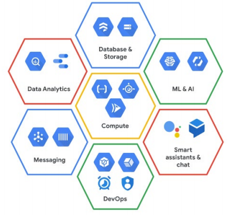
Original Search Engine¶
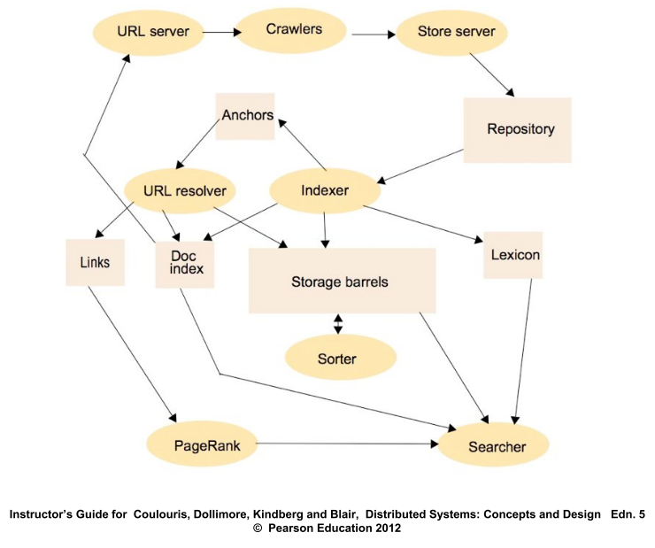
Applications / Workload¶
- Offline batch jobs
- Large datasets (PBs), bulk reads/writes (MB chunks)
- Short outages acceptable
- Web indexing, log processing, satellite imagery, etc.
- Online applications
- Smaller datasets (TBs), small reads/writes (KBs)
- Outages immediately visible to users, low latency vital
- Web search, GMail, Google Docs, etc.
- Many areas:
- Information retrieval
- Machine learning
- Image/video processing
- Natural language processing
- Machine translation
- ...
Cluster Architecture¶
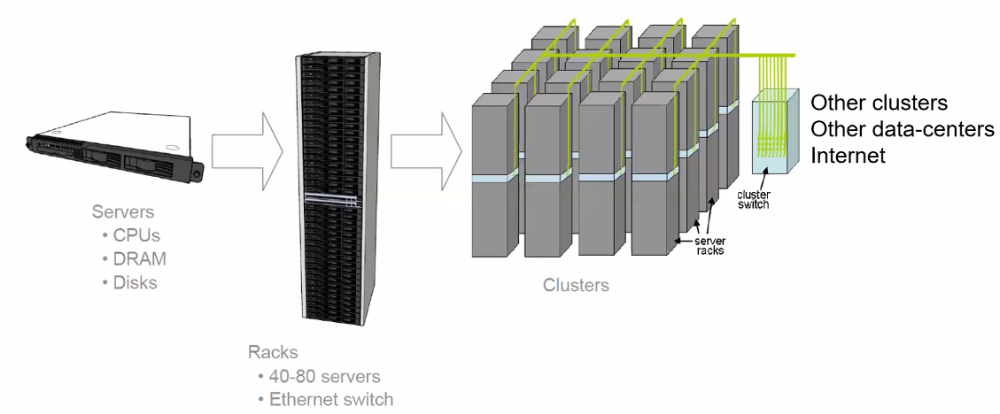
http://www.google.com/about/datacenters/index.html https://www.youtube.com/watch?v=XZmGGAbHqa0
- Groups of clusters stored in different places in the world
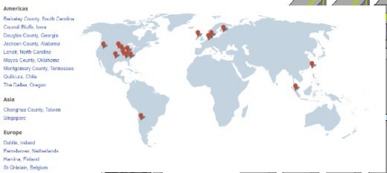
Normal Events in Large Clusters¶
Typical first year for a new cluster:
- ~0.5 overheating (power down most machines in <5 mins, ~1-2 days to recover)
- ~1 PDU failure (~500-1000 machines suddenly disappear, ~6 hours to come back)
- ~1 rack-move (plenty of warning, ~500-1000 machines powered down, ~6 hours)
- ~1 network rewiring (rolling ~5% of machines down over 2-day span)
- ~20 rack failures (40-80 machines instantly disappear, 1-6 hours to get back)
- ~5 racks go wonky (40-80 machines see 50% packet loss)
- ~8 network maintenances (4 might cause ~30-minute random connectivity losses)
- ~12 router reloads (takes out DNS and external vips for a couple minutes)
- ~3 router failures (have to immediately pull traffic for an hour)
- ~dozens of minor 30-second blips for dns
- ~1000 individual machine failures (eg DRAM)
-
~thousands of hard drive failures
-
slow disks, bad memory, mis-configured machines, flaky machines, etc.
- Long distance links: wild dogs, sharks, drunken hunters, etc.
Large variety of Software bugs, crashes
Original Cluster Philosophy¶
- Use software techniques for fault tolerance
- Use replication and parallelism for throughput and availability
- Buy HW with best price/performance ratio, not absolute performance
- “Unreliable”, low-performance commodity HW
- \Rightarrow minimize cost (incl. depreciation, operation costs) per query
Google Infrastructure¶
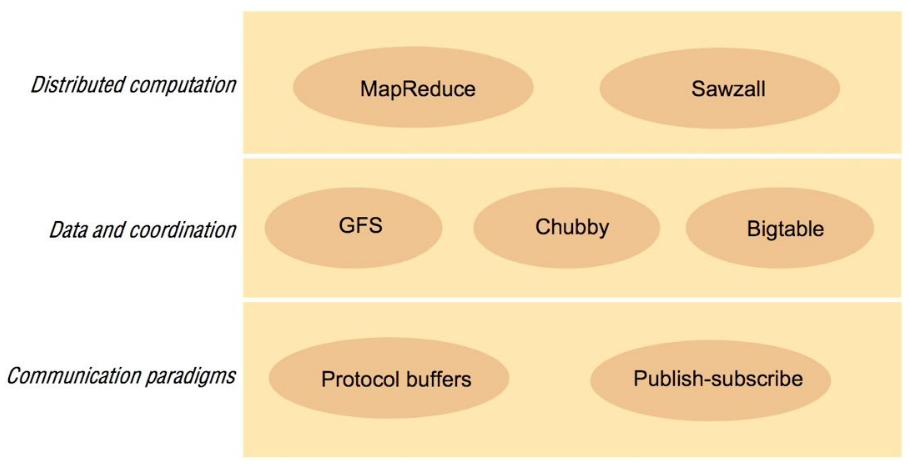
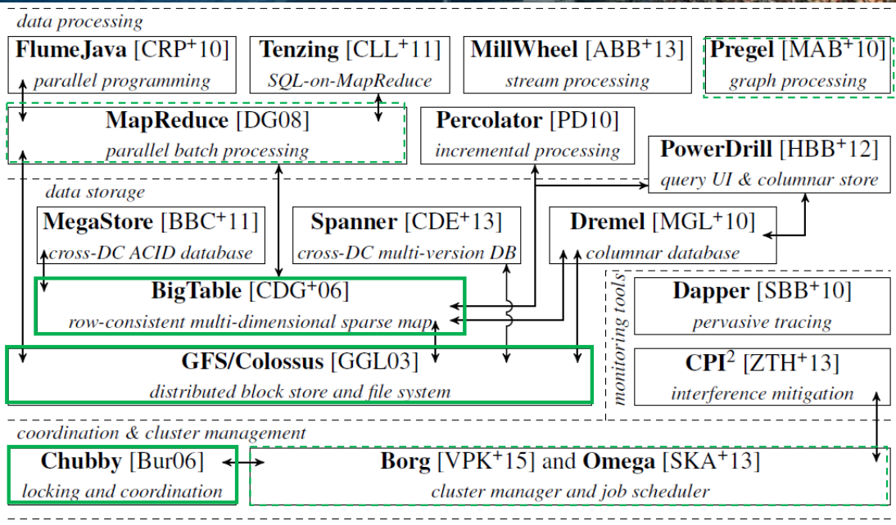
Cluster Services¶
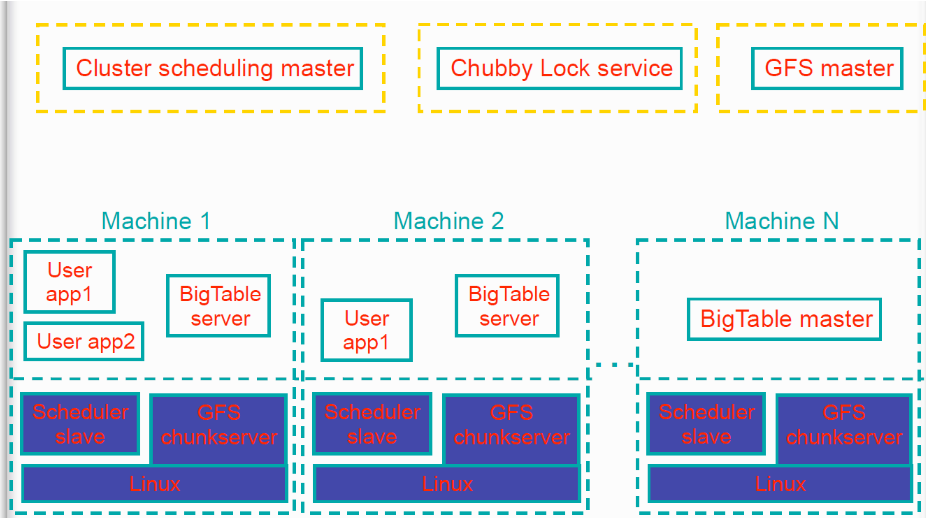
Jeff Dean (Google)
Google's Borg¶
- Borg: Google’s cluster manager
- runs >100k jobs, >1k different applications, across 10k machines
- Goal: high resource utilization, fast recovery time
- uses admission control
- efficient task-packing and over-commitment
- scheduling policies that reduce the probability of correlated failures
- machine sharing with process-level performance isolation
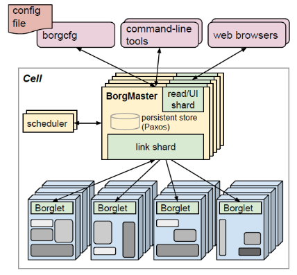
GFS - A Distributed Filesystem¶

Design Assumptions¶
- Component failures are normal
- Few very large files
- Optimized towards Google Workload (processing of bulk-data):
- Large sequential reads, few small random reads
- Frequent (concurrent) append, rare concurrent random writes; multiple producers/single consumers of data to same file
- High sustained throughput more important than latency
- Non-POSIX API:
- create, delete, open, close, read, write
- snapshot: fast copy of a file or a directory tree
- record append: multiple clients append data to the same file
- guaranteed consistency
- location of append not decided by the client
Architecture¶
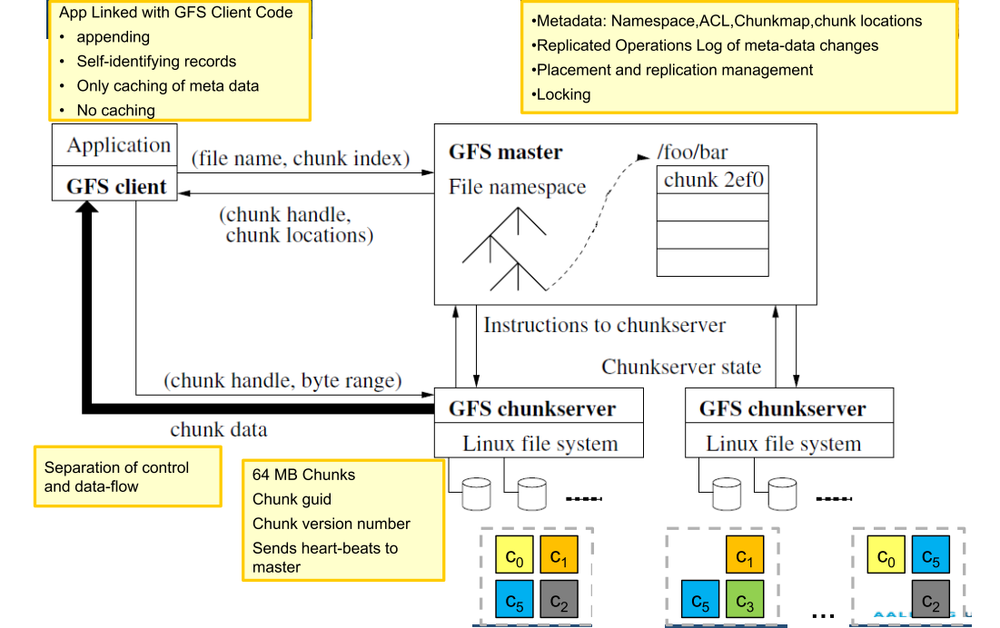
Passive Replication - Write¶
s
- Ask master who is primary (leasing) for chunk x
- the identity of the primary and the locations of the other (secondary) replicas.
- The client pushes the data to all the replicas in a forwarding chain
- Once all the replicas have acknowledged receiving the data, the client sends a write request to the primary.
- The primary forwards the write request to all secondary replicas. Each secondary replica applies mutations in the same serial number order assigned by the primary.
- The secondaries all reply to the primary indicating that they have completed the operation.
- The primary replies to the client.
- Any errors encountered at any of the replicas are reported to the client (a subset of replica’s modified)
- Client retries
- File may be inconsistent
Consistency Model¶
-
File namespace mutations (e.g. file creation) are atomic (handled by master)
-
A file region is
- “Consistent” if all clients see same data (from all replicas)
- “Defined” if consistent and clients see writes in their entirety
-
Append: record is appended atomically at least once somewhere
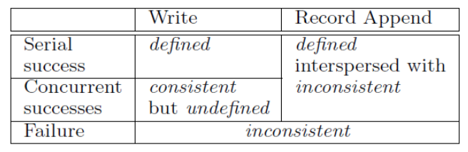
-
Applications can handle inconsistent regions
Replica Management (Master)¶
- Replica placement
- Spread replicas over different racks to optimize availability and bandwidth, but at an increased cost of writes (inter-rack-communication)
- New Chunk allocation:
- consider disk utilization, number of recent allocations to same disk, and placement across racks
- Re-replication
- When too many replica’s are unavailable
- Higher priority when replication factor is low
- Re-balancing
- to ensure uniform load and disk utilization
- Garbage Collection
- delete chunks with outdated version number, deleted files
Fault Tolerance of Master¶
- Master state (Operations-log and its check-points) is replicated and maintained in stable storage
- Relatively easy/fast recovery
- Shadow masters (read-only) provide read-only access
- External failure detection mechanism detects master failure, selects a new master, and restarts it.
Performance (2003)¶
- Micro-benchmark: performance test of basic functionality / selected aspects (in a reduced controlled setting)
- 1 master (2 shadow replicas), 16 chunk servers, 16 clients, 100Mbps network cards (12.5 MB/S) ,1 Gbps link between switches (125 MB/s)
Example results (anno 2003):
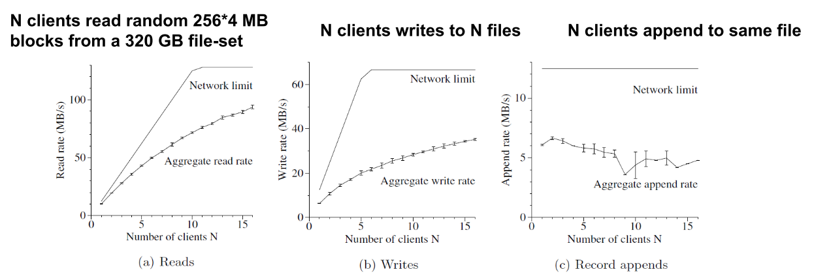
Behavior in real-life workload, real-life setup:
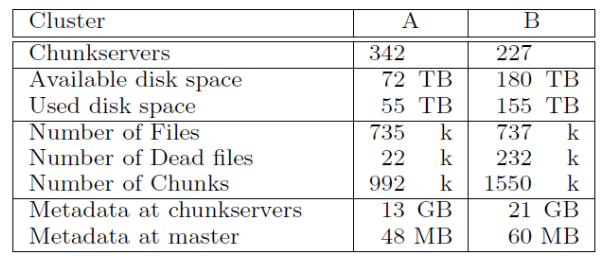
- A for R&D
- B is a production cluster
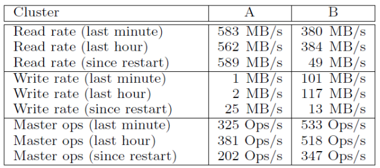
- A’s network limit is 750 MB/s
- B’s network limit is 1300 MB/s
Chunk Recovery
- When a chunk server fails or is killed, some chunks are under-replicated (not enough replica)
- 1 (out of 3) chunk server with 15000 chunks (600 GB) killed
- Restored in ~23 minutes
- 2 (out of 3) killed
- Restored to 2x replication in 2 minutes
- Prioritization kicks in
Conclusions¶
- Apparently successful DFS
- For commodity clusters
- Dedicated to Google's workload
- Key infrastructure enabling many of their services
- Interesting replica management system, but few details / policies provided
Since 2012: Colossus file system
- “Hölzle calls Colossus "similar to GFS – but done better after ten years of experience.“
- https://www.wired.com/2012/07/google-colossus/
- https://cloud.google.com/files/storage_architecture_and_challenges.pdf
Chubby - A Distributed Lock Service¶
- A coarse-grained lock service and file-system
- Lock service: allows clients to synchronize their activities
- Coarse = for hours or days, and
- Reliable (but low-volume) storage
Example: Master Election
- Nodes try to get a lock
- The nodes who wins writes result into a small file
Filesystem: Is a well-known mechanism and interface for the programmers
Chubby
- Intended for “loosely-coupled distributed systems”
- Nodes run independently - at unpredictable speed
- Nodes may crash – difficult to detect, and recover
- Messages may be lost, delayed, reordered, but not corrupted
- A coarse-grained lock service
- Highly fault tolerant (consistent)
- Availability
- Scalability
- Throughput and performance less important (coarse!)
Examples of Use¶
- GFS: Elect a master
- BigTable: master election, client discovery, table service locking
- Well-known location to bootstrap larger systems
- Name Service
- Partition workloads
- Synchronization, but not fine grained locking
Architecture¶
Typically
- 1 cell per data center
- Serves 90000+ processors
- N=5
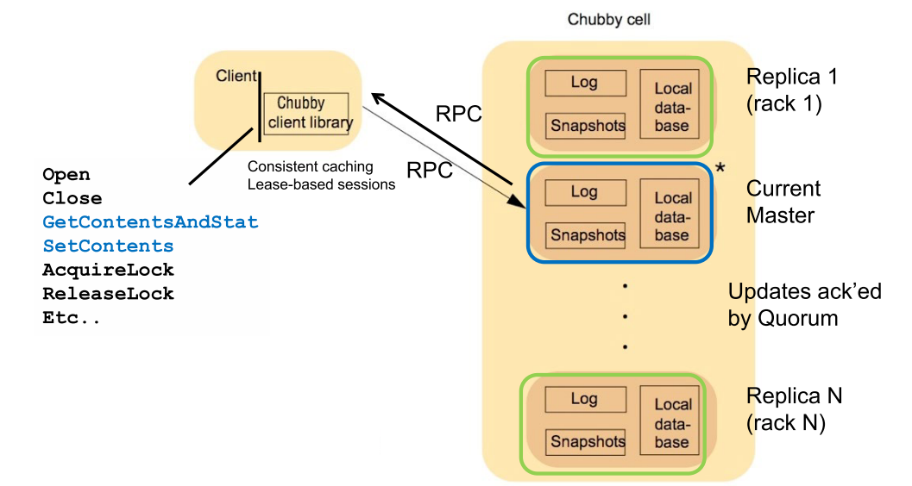
Locks and Files¶
- Filesystem like interface:
1 2 3 4 | |
- Either Exclusive-Write lock or Shared-Read lock
- Subdirectories and (non-inherited) ACLs supported, but not links
- Locks are advisory (you can ignore the lock)
- “Whole-file” R/W
Client to Master Communication¶
- All read/write requests go through the master
- Communication via RPC (through the library)
- The other replicas only get updates from the master
- How the client finds the master:
- Send master location request to all replicas in DNS
- Non-masters redirect to master
- Client sends all requests to master until negative answer
- Master notifies clients if files modified, created, deleted, lock status changes (push
- Master notifies clients if files modified, created, deleted, lock status changes (push; saves bandwidth compared to constant polling)
- Master is stateful
Read and Write¶
- Reads are handled by the master
- Write: Successful if majority of replicas acknowledge receipt of update
- Usual Prepare – Promise – Accept – Accepted (Paxos)
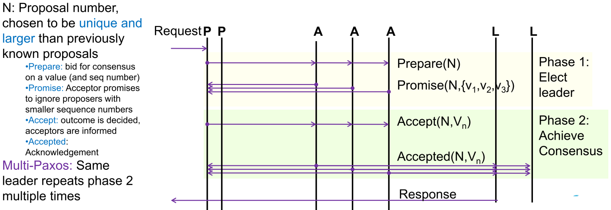
Client Sessions¶
- Sessions maintained between client and server
- Client Failure
- Master promises service for “lease time”
- Clients make “Keep-alive” RPCs to maintain session; master returns extended lease time (eg. 12 sec)
- If session is lost, server releases any client-held handles.
- Master failure
- If client does not get a renewed lease, session is in jeopardy
- Clear local cache
- Wait for “grace period” (about 45 seconds)
- Continue attempt to contact (possibly new) master
- Successful attempt => ok; jeopardy over
- Failed attempt => session assumed lost
- If client does not get a renewed lease, session is in jeopardy
Cache Consistency¶
- Clients cache all file content to reduce read traffic
- Strict consistency
- A file-modification is blocked until all caches are invalidated
- Invalidation messages are piggybacked on keep-alive messages
- Clients flush cache, and acknowledges (piggybacked on lease-renewal)
Master Re-Election¶
-
If replicas lose contact with master, they wait for grace period (shorter: 4 - 6 seconds)
-
On timeout, hold new election
- The new master updates the DNS, gets a recent copy of the database, etc.
- But how do the replicas agree on one (!) new master?
- Paxos algorithm
- Also used to propagate write updates to the replicas
Conclusions¶
- An “easy-to-use” file and locking service
- Integration of well-known (but advanced) techniques
- Rarely used code for fail-over contained “a rich collection of interesting bugs”
- Extensive verification/testing necessary
Google testing motto:
- If it ain’t broke, you are not trying hard enough!
BigTable - A High-Performance Storage System¶
Database used by Google
- Distributed storage system: PBs, across 1000s of servers
- Row/Column abstraction for storing data
- Distributed Persistent multi-level sorted map
(Keys are normally 10-100 bytes, max 64 KB)
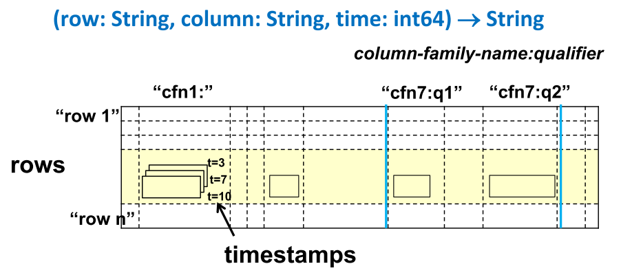
(Qualifiers are used to address individual column within family)
Example: "Web-table"¶
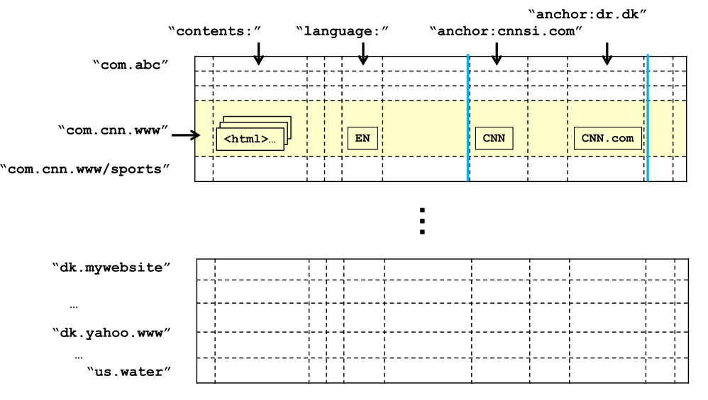
Rows are lexicographically sorted:
- Webtable domain names are reversed so we group related pages.
- Efficient domain analysis: related information likely stored in same tablet!
All row accesses are atomic!
BigTable Applications (2006)¶
Example: Google Analytics stores information on raw clicks associated with users in one table and summarizes analyzed information in a second table.
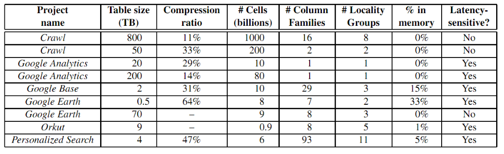
- Analytics: row = user session (sitename, starttime)
- Earth: row = geographical segment, column family = sources of data
- Personalized Search: row = userid, column family = type of action (search, webaccess)
Tablets¶
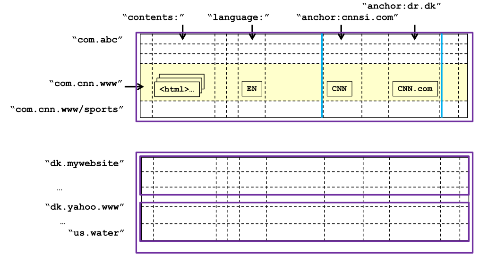
- Tablet = consecutive set of rows
- Size ~ 200MB
- Tablets can be split/merged if too large/small
- Each tablet is served by one Tablet Server (similar to a GFS chunkserver)
- Stored in “Sorted Strings Table” SSTables (indexed keyvalue maps) file format in GFS
- immutable
- Row access is atomic
System Structure¶
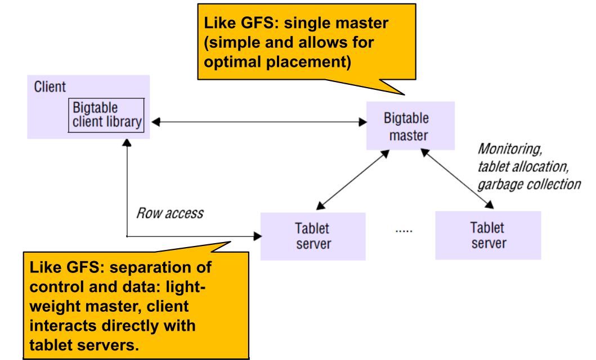
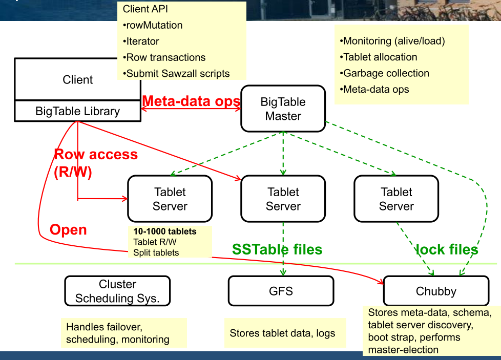
- Main goal of the BigTable infrastructure: (1) manage tablets and access and change associated data…
- … and (2) map tablet structure into the underlying file system.
- BigTable Master is stateless: all data in Chubby!
- Live set of servers detected via Chubby.
- BigTable Master:
- Tablet assignment: one server at a time.
- Tablet Server
- Tablet localization: Tablets stored in a B+Tree: B-tree (range of keys in each level), where stored at the leaves (only)
Tablet Localization¶
System maintains B+ tree index (in BigTable!)
Clients searches index
Clients cache tablet locations
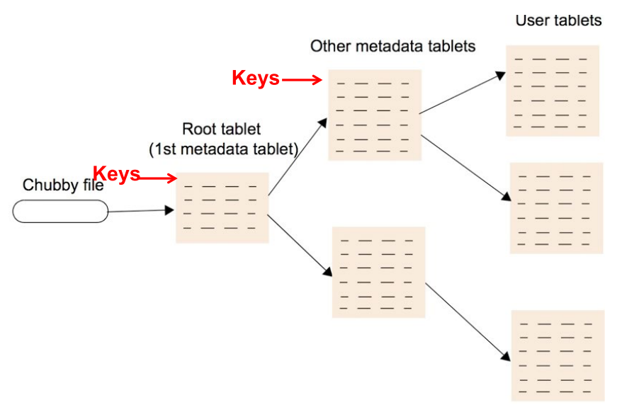
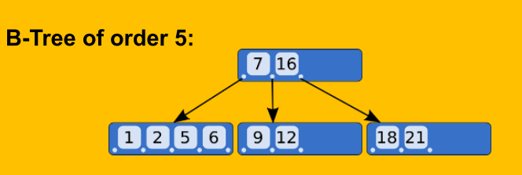
Eg. 128MB (2^27^) Meta-data tablets (1kB=2^10^ per key) in 2 index levels addresses 2^34^ tablets (of each 128Mb= 2^61^ B)
Tablet Serving¶
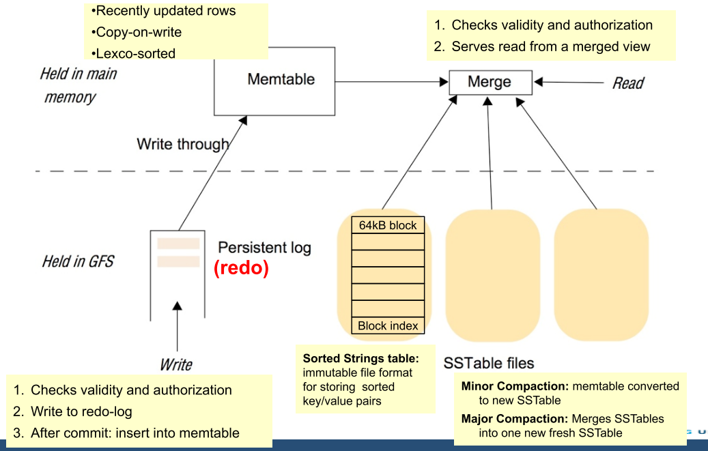
BigTable Features¶
- Single-row transactions: easy to do read/modify/write operations
- Locality groups: segregate columns into different SSTables
- In-memory columns: random access to small items
- Suite of compression techniques: per locality group
- Bloom filters: avoid seeks for non-existent data
- Probabilistic set membership test: is item in set?
- Answer: “definitely not” no need to look up!
- Answer: “maybe in set”.
- Probabilistic set membership test: is item in set?
- Garbage Collection of (immutable) SSTable Files
Performance¶
Anno 2006 [Chang et al - TOCS 26(2)]
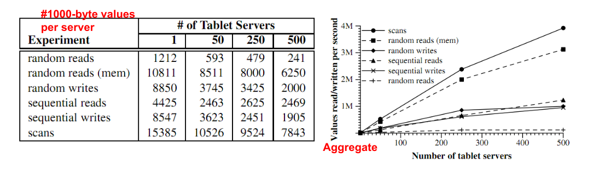
- “Mem” = locality group marked to be placed in-memory
- Random reads are slow because much data transferred from GFS, but little utilized, 1200 reads/s ~75MB/S
- Random reads are slow: cannot exploit locality, much data from GFS not used.
- Reads in memory much faster.
- Sequential read: better: same block hit 64 times
- Sequential reads faster: entire block used!
- Scans: use API for scanning over all values in a row range
- Good scalability for most operations, but not linear due to load imbalance
Status (2009)¶
- Continuous development
- Scaling, robustness
- Replication: eventual consistency replication across data centers (user facing services)
- ~500 BigTable clusters
- Largest cluster:
- 70+ PB data; sustained: 10M ops/sec; 30+ GB/s I/O
Summary¶
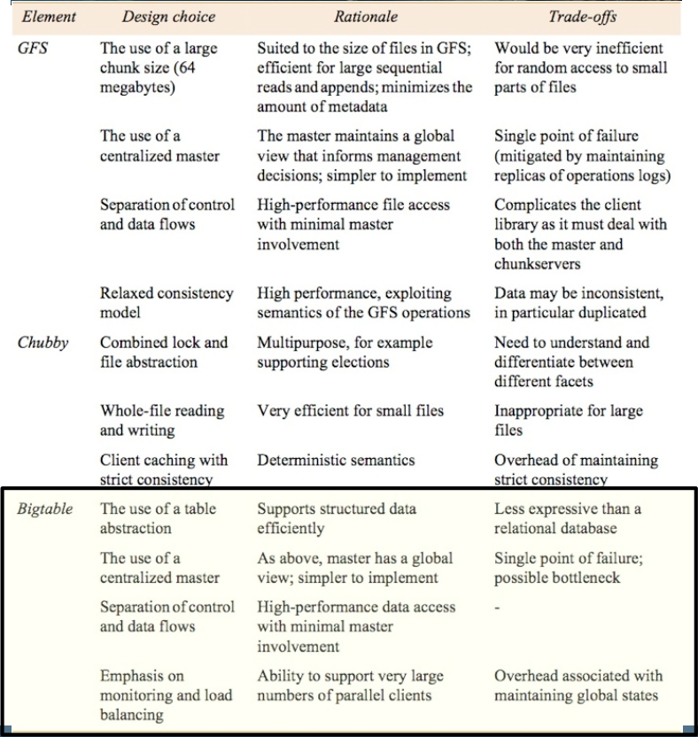